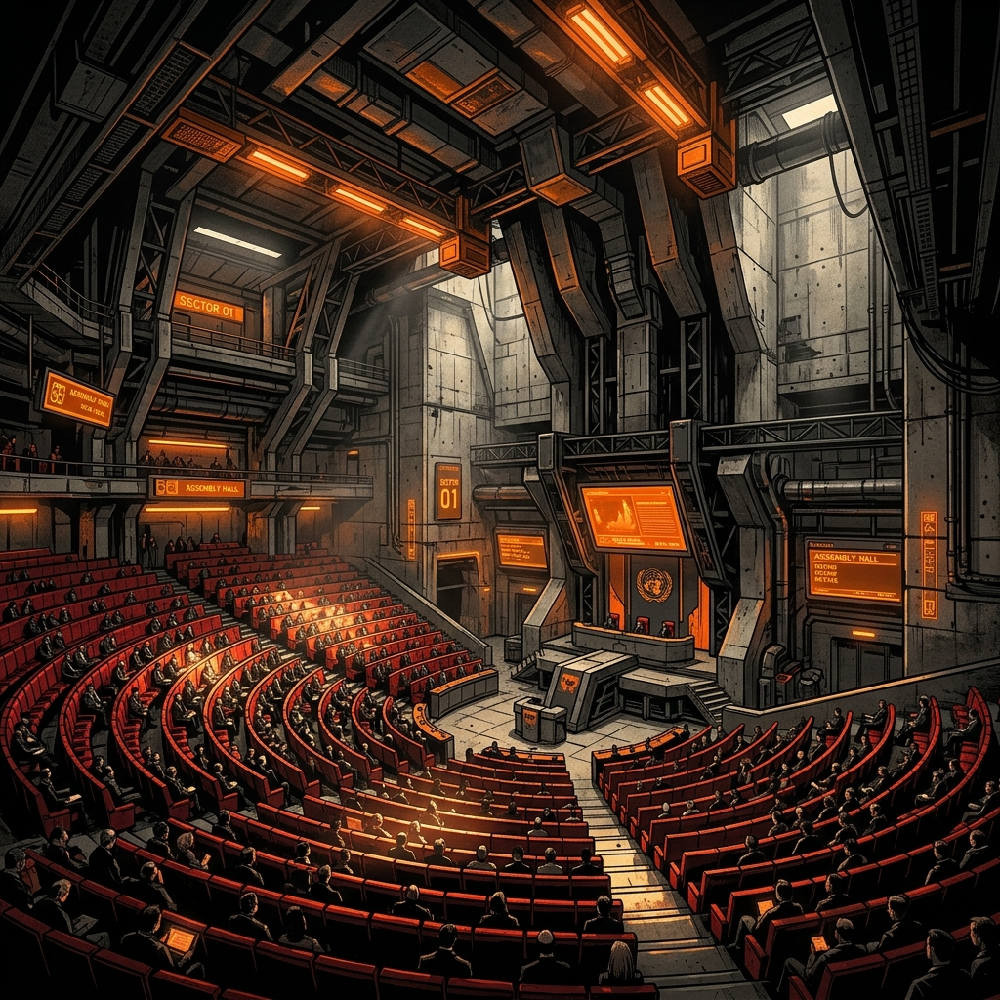

The house of review and state representation.

The Senate is the second chamber of the federal Parliament, often called the "Upper House." While the House of Representatives represents local communities based on population, the Senate represents the states and territories.
Every state has an equal number of Senators (12 each), regardless of their population size. This ensures that smaller states have an equal voice in Parliament compared to larger states. The territories have 2 Senators each.
CHOSEN BY: The voters
REPRESENTS: States/Territories
ROLE: Review laws
The Senate's primary job is to act as a "house of review" and to check the work of the government.
When the House of Representatives proposes a new law (bill), it must also be debated and passed by the Senate. Senators carefully review the laws, suggest changes, and work in committees to investigate important national issues.
Because the government does not always have a majority in the Senate, Senators play a critical role in holding the government accountable and ensuring laws are fair for all Australians.